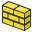

El módulo de Arquitectura proporciona un moderno entorno de trabajo BIM para FreeCAD, con soporte para características como el soporte para IFC, entidades arquitectónicas enteramente paramétricas como muros, elementos estructurales o ventanas, y producción de documentación 2D avanzada. El entorno de Arquitectura también incorpora todas las herramientas del entorno de Boceto.
Nota: la funcionalidad BIM de FreeCAD ahora se divide progresivamente entre este Arch Workbench, que contiene todas las herramientas BIM básicas, y BIM Workbench addon, que se puede instalar a través del menú Herramientas → Addon Manager, que agrega una nueva capa de interfaz sobre las herramientas Arch, con el objetivo de hacer que el flujo de trabajo BIM en FreeCAD sea más intuitivo y fácil de usar.

Contents
Herramientas
Estas son herramientas para crear objetos arquitectónicos.
-  Muro: Crea un muro utilizando un objeto seleccionado como base
-
 Elemento estructural: Crea un elemento estructural utilizando un objeto seleccionado como base
Elemento estructural: Crea un elemento estructural utilizando un objeto seleccionado como base
{kind=link}
- Herramientas de barras de refuerzo
-
 Barra de refuerzo recta: Crea una barra de refuerzo recta en un elemento estructural seleccionado
Barra de refuerzo recta: Crea una barra de refuerzo recta en un elemento estructural seleccionado -
 Barra de refuerzo forma U: Crea una barra de refuerzo UShape en un elemento estructural seleccionado
Barra de refuerzo forma U: Crea una barra de refuerzo UShape en un elemento estructural seleccionado -
 Barra de refuerzo forma L: Crea una barra de armadura LShape en un elemento estructural seleccionado
Barra de refuerzo forma L: Crea una barra de armadura LShape en un elemento estructural seleccionado -
 Barra de refuerzo doblada: Crea una barra de refuerzo Bent Shape en un elemento estructural seleccionado
Barra de refuerzo doblada: Crea una barra de refuerzo Bent Shape en un elemento estructural seleccionado -
 Barra de refuerzo estribo: crea una barra de refuerzo Stirrup en un elemento estructural seleccionado
Barra de refuerzo estribo: crea una barra de refuerzo Stirrup en un elemento estructural seleccionado -
 Barra de refuerzo forma helicoidal: Crea una barra de armadura helicoidal en un elemento estructural seleccionado
Barra de refuerzo forma helicoidal: Crea una barra de armadura helicoidal en un elemento estructural seleccionado - Barra de refuerzo personalizada: crea una barra de refuerzo personalizada en un elemento estructural seleccionado utilizando un croquis.
-
{kind=link}
-
 Piso: Crea un piso incluyendo los objetos seleccionados
Piso: Crea un piso incluyendo los objetos seleccionados -
 Construcción: Crea una construcción incluyendo los objetos seleccionados
Construcción: Crea una construcción incluyendo los objetos seleccionados -
 Sitio: Crea un sitio incluyendo los objetos seleccionados
Sitio: Crea un sitio incluyendo los objetos seleccionados -
 Ventana: Crea una ventana utilizando un objeto seleccionado como base
Ventana: Crea una ventana utilizando un objeto seleccionado como base -
 Plano de sección: Añade un objeto plano de sección al documento
Plano de sección: Añade un objeto plano de sección al documento
- Herramientas de eje
-
 Ejes: Agrega una matriz de ejes de una dirección al documento
Ejes: Agrega una matriz de ejes de una dirección al documento -
 Sistema de ejes: Agrega un sistema de ejes compuesto por varios ejes al documento
Sistema de ejes: Agrega un sistema de ejes compuesto por varios ejes al documento -
 Regilla: Agrega un objeto similar a una cuadrícula al documento
Regilla: Agrega un objeto similar a una cuadrícula al documento
-
-
 Techo: Crea un techo con pendiente a partir de la cara seleccionada
Techo: Crea un techo con pendiente a partir de la cara seleccionada -
 Espacio: Crea un objeto de espacio en el documento
Espacio: Crea un objeto de espacio en el documento -
 Escaleras: crea un objeto de escaleras en el documento
Escaleras: crea un objeto de escaleras en el documento
- Herramientas del panel
-
 Panel: crea un objeto de panel a partir de un objeto 2D seleccionado
Panel: crea un objeto de panel a partir de un objeto 2D seleccionado -
 Corte de panel: crea una vista en Z de corte 2D desde un panel available in version 0.17/es
Corte de panel: crea una vista en Z de corte 2D desde un panel available in version 0.17/es
-
-
 hoja de panel: crea una hoja en 2D que incluye recortes de paneles u otros objetos en 2D available in version 0.17/es
hoja de panel: crea una hoja en 2D que incluye recortes de paneles u otros objetos en 2D available in version 0.17/es
-
-
 Nido: Permite anidar varios objetos planos dentro de una forma como contenedor available in version 0.17/es
Nido: Permite anidar varios objetos planos dentro de una forma como contenedor available in version 0.17/es
-
-
 Marco: Crea un objeto de marco a partir de un diseño seleccionado
Marco: Crea un objeto de marco a partir de un diseño seleccionado -
 Equipamento: Crea un equipo u objeto de mobiliario
Equipamento: Crea un equipo u objeto de mobiliario
- Herramientas de tubería
-
 Conductos: Crea un conducto available in version 0.17/es
Conductos: Crea un conducto available in version 0.17/es
-
-
 Conector de conductos: Crea una conexión de esquina o T entre 2 o 3 conductos seleccionados available in version 0.17/es
Conector de conductos: Crea una conexión de esquina o T entre 2 o 3 conductos seleccionados available in version 0.17/es
-
- Herramientas materiales
-
 Material: Crea un material y lo atribuye a objetos seleccionados, si hay alguno
Material: Crea un material y lo atribuye a objetos seleccionados, si hay alguno -
 Multi-Material: Crea un multi-material y lo atribuye a objetos seleccionados, si hay alguno available in version 0.17/es
Multi-Material: Crea un multi-material y lo atribuye a objetos seleccionados, si hay alguno available in version 0.17/es
-
-
 Lista: Crea diferentes tipos de listas
Lista: Crea diferentes tipos de listas
Herramientas de modificación
Estas son herramientas para modificar objetos de arquitectura.
-
 Corte con plano: Corta un objeto de acuerdo con un plano.
Corte con plano: Corta un objeto de acuerdo con un plano. -
 Añadir: Añade objetos a un componente
Añadir: Añade objetos a un componente -
 Eliminar: Resta o elimina objetos de un componente
Eliminar: Resta o elimina objetos de un componente -
 Inspección: ingresa o abandona el modo de inspección
Inspección: ingresa o abandona el modo de inspección
Utilidades
Estas son herramientas adicionales para ayudarte en tareas específicas.
-
 Componente: Crea un componente Arch no paramétrico
Componente: Crea un componente Arch no paramétrico -
 Clone componente:
Clone componente: -
 Dividir malla: Divide una malla seleccionada en componentes separados
Dividir malla: Divide una malla seleccionada en componentes separados -
 Malla a forma: Convierte una malla en una forma, unificando caras coplanares
Malla a forma: Convierte una malla en una forma, unificando caras coplanares -
 Eliminar forma: Convierte formas basadas en cubos a objetos de arquitectura completamente paramétricos
Eliminar forma: Convierte formas basadas en cubos a objetos de arquitectura completamente paramétricos -
 Seleccionar mallado no-sólido: Selecciona todos los mallados no-sólidos de la selección actual o del documento
Seleccionar mallado no-sólido: Selecciona todos los mallados no-sólidos de la selección actual o del documento -
 Tapar agujeros: Cierra los agujeros en el objeto basado en formas seleccionado
Tapar agujeros: Cierra los agujeros en el objeto basado en formas seleccionado - Remover forma: vuelve el objeto de Arch basado en la forma cúbica completamente paramétrico
-
 Comprobar: Comprueba si los objetos seleccionados son sólidos y no contienen defectos
Comprobar: Comprueba si los objetos seleccionados son sólidos y no contienen defectos -
 Explorador IFC: explore los contenidos de un archivo IFC
Explorador IFC: explore los contenidos de un archivo IFC -
 Cambia IFC-Brep bandera: Obliga a exportar un objeto seleccionado como IfcFacetedBrep.
Cambia IFC-Brep bandera: Obliga a exportar un objeto seleccionado como IfcFacetedBrep. -
 3 vistas de malla: Crea vistas superior, frontal y lateral desde una malla.
3 vistas de malla: Crea vistas superior, frontal y lateral desde una malla. - Crear hoja de cálculo IFC...:
-
 Alternar subcomponentes: Muestra u oculta los subcomponentes de un objeto Arch.
Alternar subcomponentes: Muestra u oculta los subcomponentes de un objeto Arch.
Preferencias
-
 Preferencias...: Disponibles en Arch Module.
Preferencias...: Disponibles en Arch Module.
Formatos de archivo
- IFC : Industry foundation Classes
- DAE : Formato de malla de Collada
- OBJ : Formato Obj de malla (sólo exportar)
- JSON: formato de notación de objetos JavaScript (solo exportación)
- 3DS: formato 3DS (solo importación)
API
El Módulo de arquitectura puede usarse en scripts de python y en macros usando las funciones de Arch Python API
Tutoriales
- Tutorial de Arch
- Descripción rápida de Arch en el blog de Yorik
- Presentación en video del Ambiente de trabajo Arch
- Importar desde STL u OBJ
- Exportar a STL u OBJ
- Tutorial del panel de Arch
- capítulo de modelado BIM del manual de FreeCAD